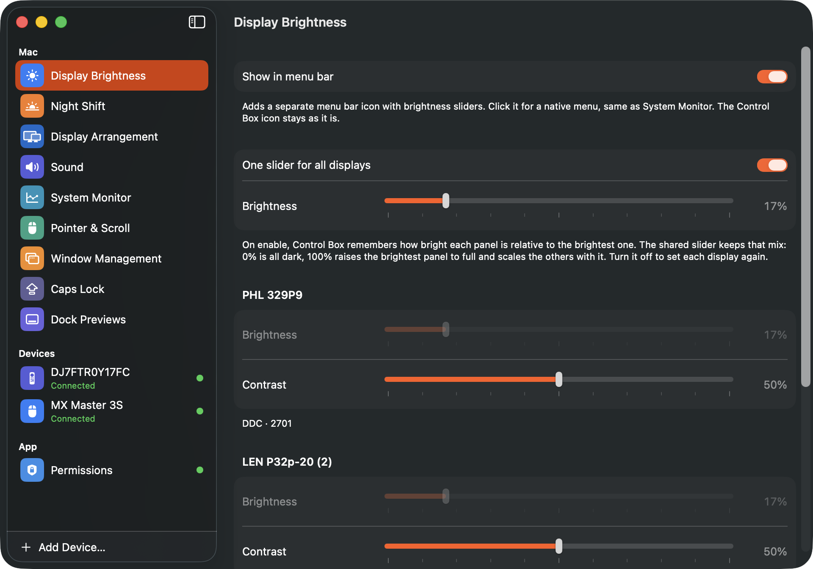
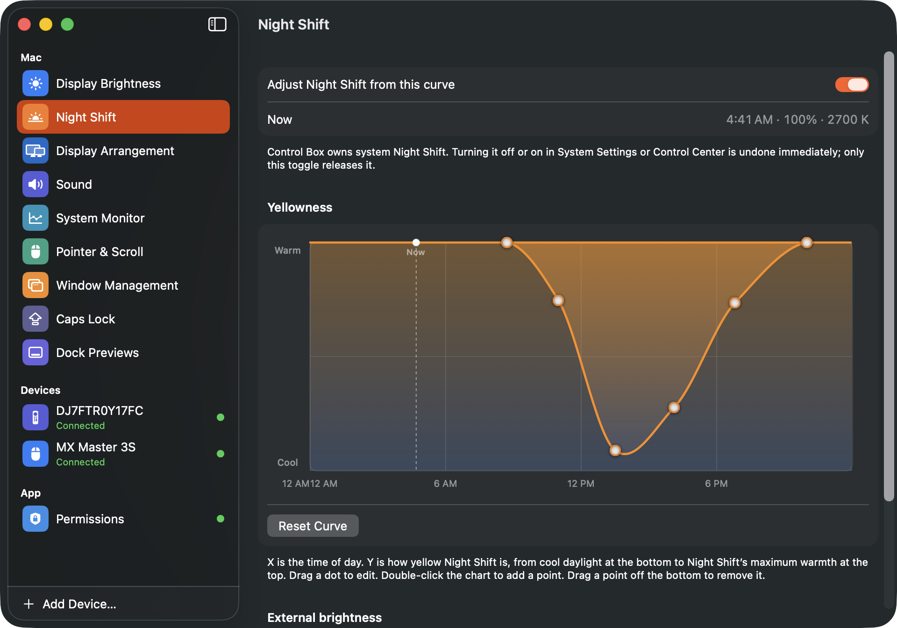
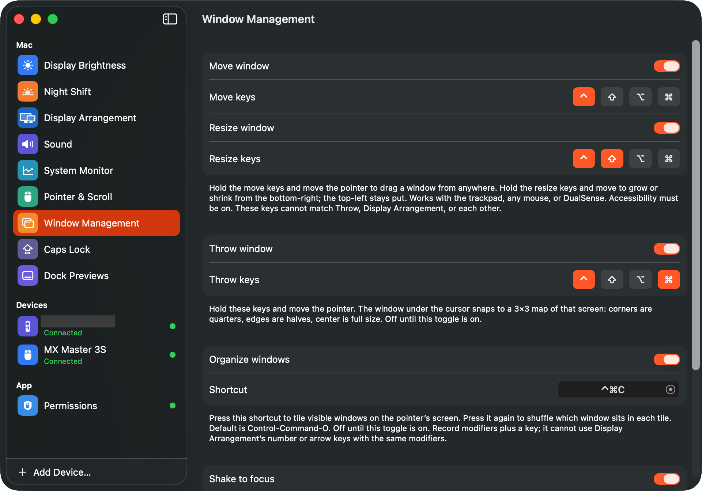
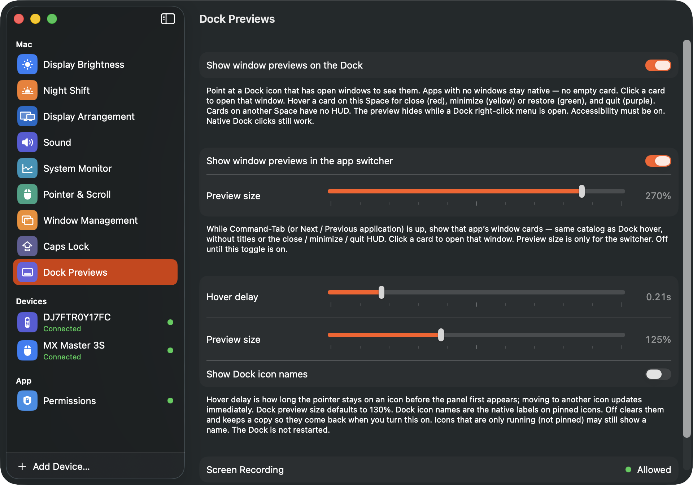
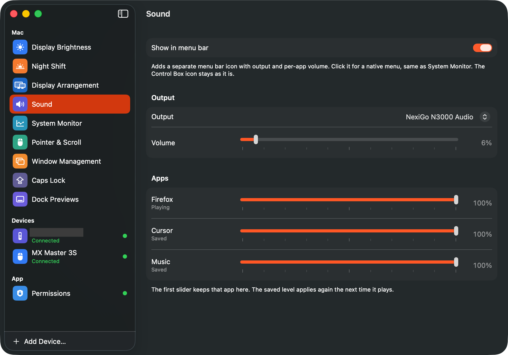
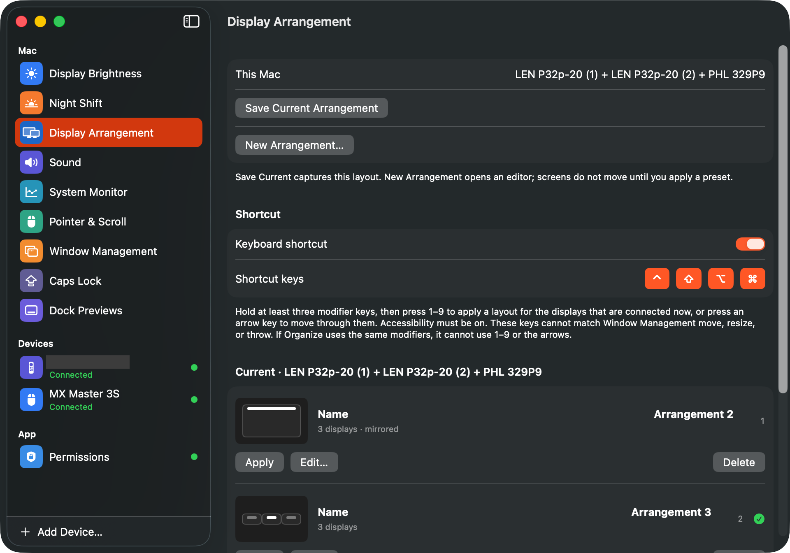

Display Brightness
Per-panel brightness and contrast. One slider can keep each display’s mix. Optional menu bar extra.
The missing control panel for macOS
Displays · Sound · Pointer · Windows · Devices
Displays, sound, pointer, windows, and a system monitor — plus DualSense, Siri Remote, and MX Master when you want them. Nothing is uploaded.
brew install --cask whitesticker/controlbox/controlbox





Display Brightness, Night Shift, Window Management, Dock Previews, Sound, Display Arrangement
Per-panel brightness and contrast. One slider can keep each display’s mix. Optional menu bar extra.
A 24-hour warmth curve for system Night Shift. Optional follow dims or brightens external monitors.
Save layout presets for the screens that are plugged in now. Keyboard shortcut plus a layout HUD.
Output volume, then a per-app mixer. Optional menu bar extra. Needs System Audio Recording for per-app volume.
Hold a chord to move or resize from anywhere. Throw, organize, shake-to-focus, Dock-click minimize.
Hover a Dock icon to see that app’s windows. Optional cards in the app switcher while Command-Tab is up.
Pointer speed, wheel and thumb-wheel speed, smooth scrolling, direction. Not gated on an MX Master.
Optional second menu bar extra: live network speed plus CPU, GPU, memory, disk, sensors, and battery.
Buttons, sticks, rumble. 1-finger and 2-finger touchpad are separate Gestures. Sticks can be pointer or scroll.
Clickpad pointer, click-wheel scroll, face buttons, live calibration. A2540.
Extra buttons plus thumb Gesture — tap is a click, hold and move is a swipe.
Extra buttons including Side, plus the Haptic pad. Isolated HID++ reader.
Control Box stays on your Mac. It does not send input or audio to a server. Grant only what you use: Accessibility, Input Monitoring, Screen Recording for Dock thumbnails, and System Audio Recording for the per-app mixer.